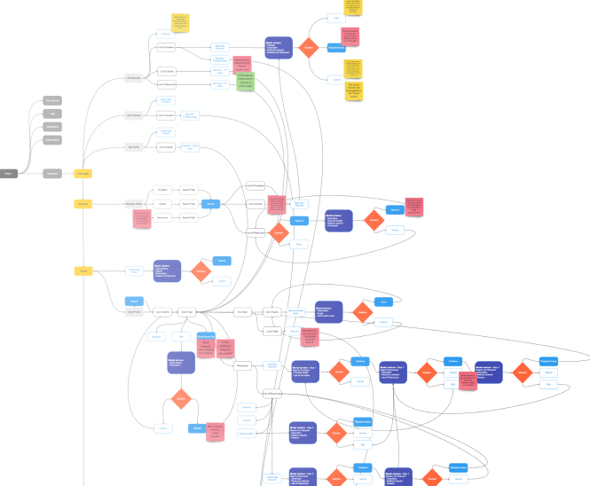
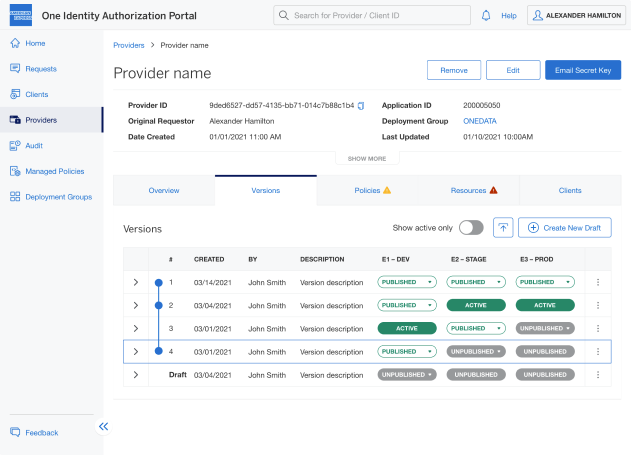

OneView: Multi-cross platform application
The project involves the development and implementation of Oneview, a tool utilized by Rogers Reps at the Canadian leading communications and media company, Rogers.
The Oneview tool is used by reps to assist customers with transactions such as buying a phone or an internet plan. Rogers Reps serve customers on a daily basis through phone, chat, and in retail stores, and Oneview enables them to efficiently and effectively manage these transactions. The project aims to improve the customer experience by streamlining the transaction process and empowering reps with the necessary tools to deliver service.
Challenges
High Rep attrition rate
One of the biggest challenges for the project is the high attrition rate of Reps. High turnover can be costly for the company as it leads to the loss of skilled and trained employees, increased recruitment costs, and lower customer satisfaction. To mitigate this challenge, the company needs to identify the root causes of Rep attrition and implement strategies to address them, such as offering competitive compensation and benefits, providing ongoing training and development opportunities, and creating a positive and supportive work culture.
Long transaction time
Long transaction time can lead to frustrated customers and lost sales. The company needs to identify bottlenecks in the transaction process, such as manual data entry, complex procedures, or slow technology, and implement solutions to reduce transaction time. This can include optimizing the checkout process, streamlining the order fulfillment process, or leveraging automation to reduce manual steps.
Costly, time-consuming training for new Reps
Training new Reps is a time-consuming and costly process that can affect the overall productivity of the sales team. The company needs to identify ways to streamline the training process, such as using online training modules, leveraging on-the-job training, and providing access to training resources and tools. Additionally, the company can invest in retention programs to encourage newly trained Reps to stay with the company.
Siloed processes lead to disconnected experiences
Siloed processes can lead to disconnected experiences for both customers and Reps. When different departments or systems don't communicate effectively, it can lead to errors, inefficiencies, and missed opportunities. The company needs to identify areas where integration is needed, such as customer data, inventory management, or order tracking, and implement solutions to connect these processes. This can include implementing an integrated CRM system, leveraging APIs, or consolidating data sources.
Challenges
As part of project team I played a key role in the strategic release planning for the project, working with the development team and stakeholders to identify potential issues and develop strategies to mitigate them to ensure that the application was launched in a timely and effective manner. My work as a UX designer was critical to the success of the project, ensuring that it met the needs of the users and the business, while also delivering a high-quality user experience.
Discover needs
One of the priorities was to gather requirements, which included determining the key goals and objectives of the project, as well as the needs and preferences of users.

Developing strategy
I was responsible for defining the interaction flows for the application, which involved mapping out the different screens and user actions required to achieve the desired outcomes. I also created a backlog of features and functionality, which helped to prioritize the work and ensure that the most important tasks were completed first.
Build relationship
I conducted interviews with stakeholders to gain a deeper understanding of their needs and expectations, which helped to inform your designs and recommendations. I also facilitated workshops to bring together different perspectives and ideas, and to ensure that everyone was aligned on the project goals and objectives.
Design delivery
I delivered high-fidelity prototyping and interactive designs that could be tested and refined with users. I also worked closely with developers to ensure that the designs were feasible and could be implemented effectively.
